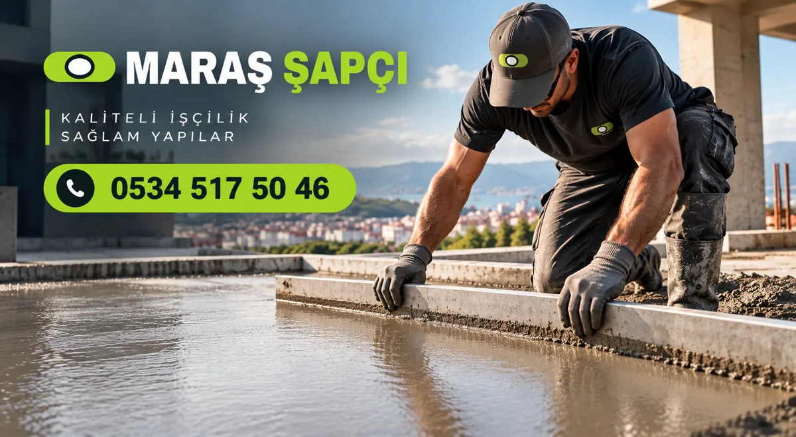
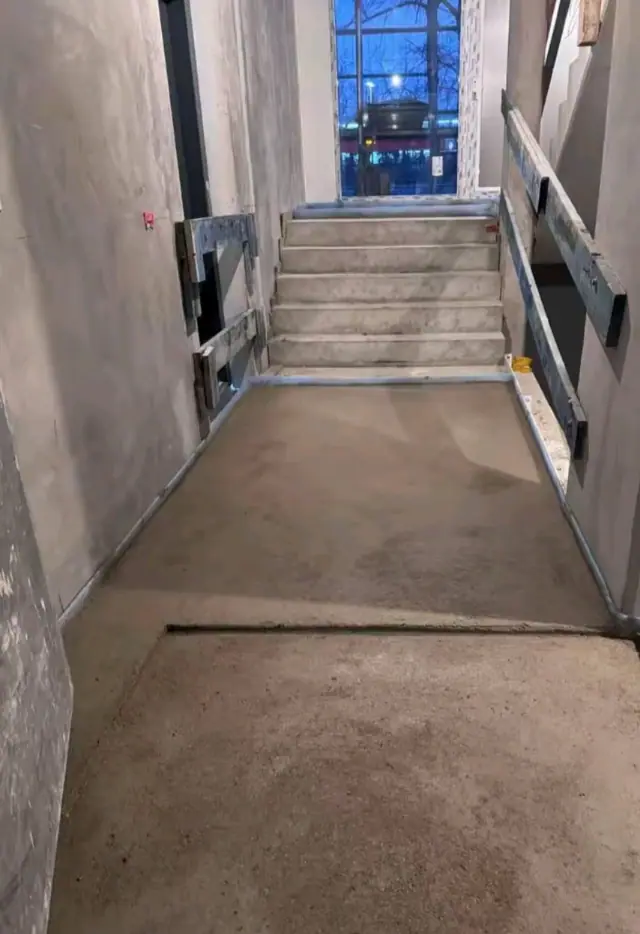

Elbistan Şapçı ve Şap Ustası
Elbistan'da şap yaptıracaksanız aradığınız numara 0534 517 50 46. Elbistan merkezinde ve 93 mahallesinde makineli şap atıyoruz; pompa ile basıp mastarla çekiyor, helikopterle kapatıyoruz.

Elbistan'da şap işleri
Elbistan, Kahramanmaraş'ın merkezden sonraki en büyük ilçesi ve 6 Şubat'taki ikinci büyük depremin merkez üssü. Depremden sonra ilçe merkezinde ve ovadaki köylerde çok sayıda yeni konut yapılıyor.
Elbistan yüksek bir ova üzerinde; kışlar uzun ve soğuk geçiyor. Bu yüzden burada şap takvimi merkezden farklı işliyor: dondan korunmayan şap yüzeyden dağılır, bunu bildiğimiz için soğuk havada döküm yapmıyoruz.

Elbistan'da şap nereye yaptırılır?
Elbistan'da "şap yapan yer neresi, hangi ustaya vereyim" diye soruyorsanız cevabımız kısa: bize. Elbistan şap ustası olarak ekip ve makineyle adresinize geliyoruz; sizin bir yere gitmeniz gerekmiyor.
- Arayın: 0534 517 50 46
- Mahalle, metrekare ve katı söyleyin.
- Gün ve fiyatı netleştirelim.
- Şapı atalım, kürünü anlatalım.
Elbistan şap ustası olarak dikkat ettiklerimiz
Yüksek ve soğuk bir ilçe olduğu için don, şapın en büyük düşmanı. Döküm gününü gece sıcaklığına göre seçiyoruz.
- Gece donu beklenen günlerde şap dökmüyoruz; pencere ve kapısı takılmamış binada şap korunamaz.
- Kışa yetişmesi gereken işlerde sonbahar başında takvim çıkarıyoruz; geç kalan iş bahara kalabiliyor.
- Kaloriferli ya da yerden ısıtmalı binalarda şap kuruyana kadar ısıtmayı yüksek açmayın; ani kuruma çatlatır.
Elbistan şap fiyatları
Fiyat aralığımız Elbistan'da de diğer ilçelerle aynı. Kesin rakamı metrekare ve iş koşullarını öğrenince veriyoruz.
Şap işçiliği
70–100 TL/m²
Kum ve çimento sizden, makine ve ekip bizden.
Malzemeli + faturalı
300–350 TL/m²
Kum, çimento, işçilik ve fatura dahil anahtar teslim.
Fiyatlar Ekim 2026 itibarıyla. Kesin rakam metrekare ve iş koşullarına göre verilir.
Elbistan mahallelerinde şapçı
Elbistan ilçesinde aşağıdaki 93 mahallenin hepsine geliyoruz. Mahallenizi yazmanız yeterli.
- Akarca
- Akbayır
- Aksakal
- Akören
- Alembey
- Alkayaoğlu
- Armutalan
- Atmalıkaşanlı
- Ağlıca
- Bahçelievler
- Bakış
- Balıkçıl
- Battalgazi
- Beyyurdu
- Beştepe
- Büyükyapalak
- Ceyhan
- Cumhuriyet
- Demircilik
- Dervişçimli
- Doğan
- Eldelek
- Elmalı
- Esentepe
- Evcihüyük
- Fakıoğlu
- Geçit
- Gökçek
- Güblüce
- Gücük
- Gümüşdöven
- Günaltı
- Gündere
- Güneşli
- Güvercinlik
- Hacıhasanlı
- Hasanalili
- Hasankendi
- Horhor
- İkizpınar
- İncecik
- İğde
- Kalaycık
- Kalealtı
- Kangal
- Kantarma
- Karaelbistan
- Karahasanuşağı
- Karahüyük
- Karamağara
- Kavaktepe
- Kayageçit
- Keçemağara
- Köprübaşı
- Körücek
- Köseyahya
- Köşk
- Kümbet
- Küçükyapalak
- Kızılcaoba
- Kışla
- Orhangazi
- Ovacık
- Pınarbaşı
- Sarıyatak
- Sevdilli
- Söğütlü
- Sünnet
- Tapkıran
- Tapkırankale
- Taşburun
- Tepebaşı
- Tepebaşı (gücük)
- Topallı
- Toprakhisar
- Türkören
- Uncular
- Uzunpınar
- Yalak
- Yalıntaş
- Yapraklı
- Yapılı
- Yapılıpınar
- Yeşilyurt
- Yoğunsöğüt
- Yunus Emre
- Çalış
- Çatova
- Çiçek
- Çıtlık
- Özbek
- Özcanlı
- Izgın
Şap işlerimizden fotoğraflar
Sık sorulan sorular
Elbistan'da kışın şap atılır mı?
Hava sıcaklığı ve bina kapalılığı uygunsa atılır. Gece donu varsa ve bina açıksa beklemenizi öneriyoruz; donan şap sonradan düzelmiyor.
Elbistan köylerine geliyor musunuz?
Geliyoruz. Uzak köylerde işi tek güne toplamak için metrekare ve adres bilgisini önceden alıyoruz.
Elbistan'da şap yapan yer neresi?
Elbistan'da şapı Maraş Şapçı olarak biz yapıyoruz; ekip ve makine adresinize geliyor. Ulaşmak için: 0534 517 50 46.
Elbistan şap ustası numarası nedir?
Elbistan ve bütün mahalleleri için şap ustası hattımız 0534 517 50 46. WhatsApp'ta da açık.
Elbistan'da şap fiyatı ne kadar?
Ekim 2026 itibarıyla işçilik 70–100 TL/m², malzemeli ve faturalı 300–350 TL/m².
Yakın ilçeler
Kahramanmaraş'ın diğer ilçelerinde şap ustası
Elbistan'da şap için hemen arayın
Arayın ya da WhatsApp'tan yazın: ilçe, metrekare ve şapın atılacağı kat yeterli.